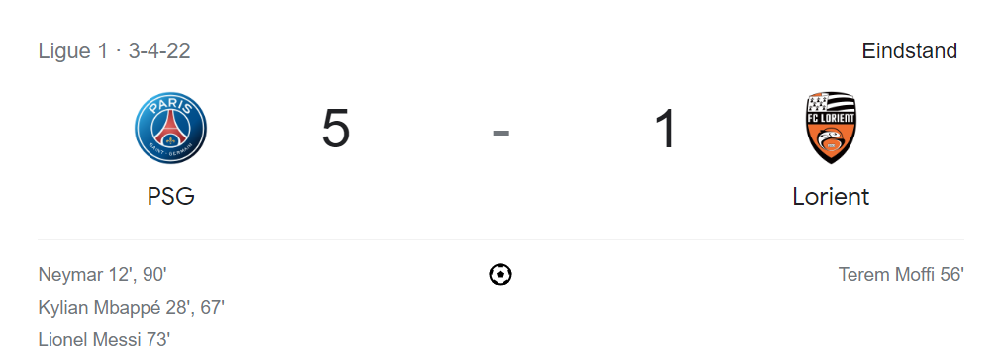
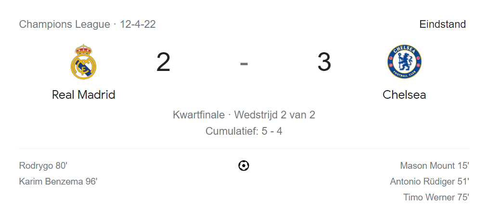
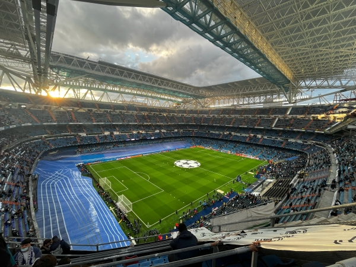
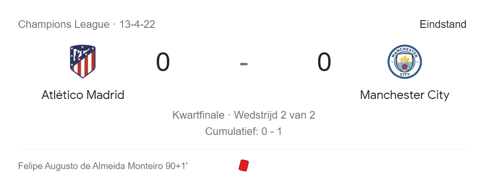
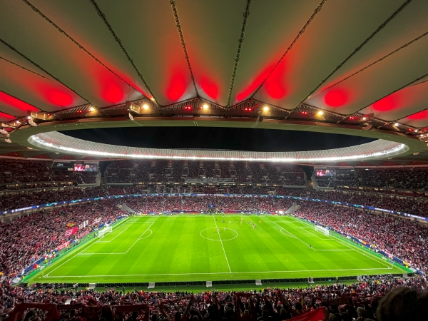
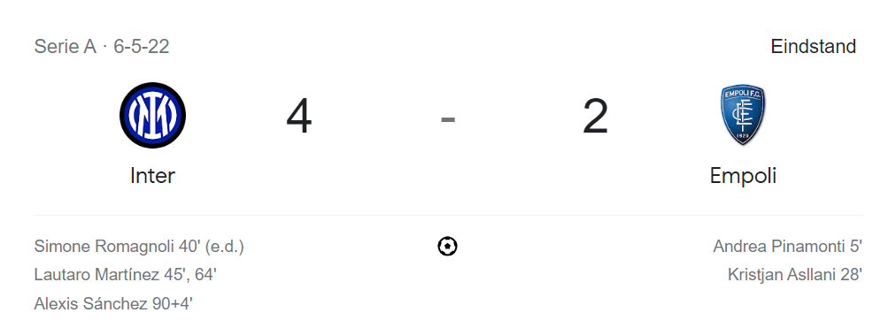
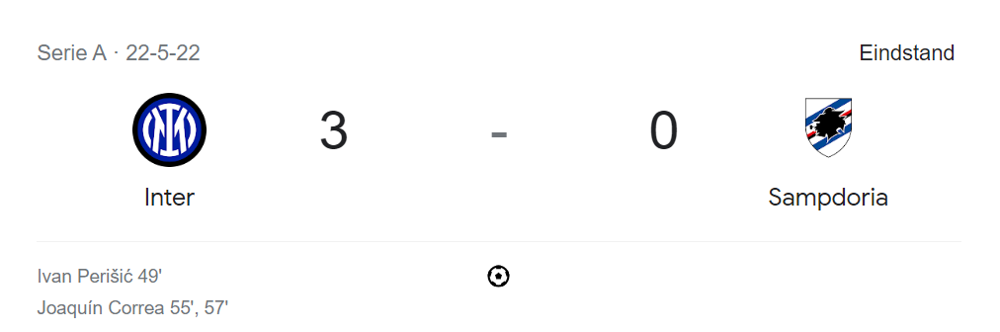
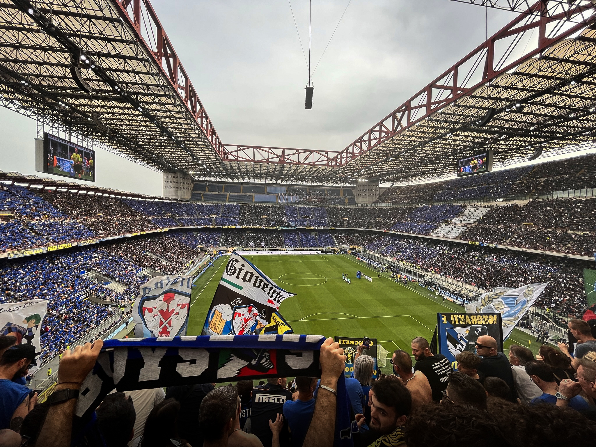

Voetbalwedstrijden die we hebben bezocht
Mijn grootste passie is voetbal. Daarom waren we van plan om onderweg een aantal voetbalwedstrijden te bezoeken. Het heeft ons veel geld gekost maar het was elke cent waard. Deze wedstrijden hebben we bezocht:
De wedstrijden
Hieronder zijn de uitslagen te zien van de wedstijden waar ik ben geweest. Per wedstrijd zal ik een stukje vertelling over mijn ervaringen. Ook ga ik elke wedsrijd beoordelen op het stadion, de sfeer en de wedstrijd zelf.
Paris Saint Germain - FC Lorient

Deze wedstrijd vond plaats op de allereerste dag van de reis (3 April 2022). De wedstrijd werd gespeeld in het thuisstadion van Paris Saint Germain: Parc des Princes. Ik was hiervoor nog niet eerder naar een wedstrijd geweest van de Ligue 1 (de hoogste Franse voetbalcompetitie). De tickets kostte €60 per stuk. Het was fantastisch om Neymar Jr, Kylian Mbappé en Lionel Messi van Paris Saint Germain samen in actie te zien. Het was ook nog erg special dat ze alle drie minimaal één doelpunt hadden gemaakt.

Het stadion van Paris Saint Germain vond ik erg mooi. Er passen 48.712 mensen in en daarmee is dit stadion het op vier na grootste stadion van Frankrijk. De blauw en roodgekleurde stoelen vormen samen meerdere logo’s van Paris Saint Germain in de tribunes. Ik geef dit stadion een 7,5 uit de 10. De sfeer viel tegen helaas, de fans vloten een van hun beste spelers (Lionel Messi) uit omdat hij volgends hun niet goed genoeg presteerde voor de club. De uit-fans daarentegen waren 90 minuten lang aan het zingen en springen ook al verloren ze met een verschil van vier goals. De sfeer geef ik een 5. Als laatste de wedstrijd zelf, ik was erg onder de indruk van de drie aanvallers van Paris Saint Germain die samen vijf goals scoorde. Hierdoor was de wedstrijd geen enkel moment spannend maar het was alsnog erg leuk om naar te kijken. Ik geef de wedstrijd een 8. Zo komt deze wedstrijd uit op een gemiddelde van een 6,8.
Real Madrid - Chelsea FC

Deze Champions League wedstrijd vond plaats in het stadion van Real Madrid: Estadio Santiago Bernabéu. Het was de tweede kwartfinale, de eerste was al gespeeld in Londen dat werd 1-3 voor Real Madrid. We hadden de tickets één dag van tevoren gekocht voor €270 per stuk. Dit is een enorm bedrag en we zaten ook nog eens helemaal boven in het stadion. Maar we hadden het er voor over en het was het zeker waard.

Estadio Santiago Bernabéu is een van de bekendste stadions ter wereld en het heeft een capaciteit van 83.168. Het stadion was op dat moment onder constructie dus het was niet helemaal gevuld maar er waren alsnog zeker 70.000 mensen aanwezig. Ik geef dit stadion ondanks het toen onder constructie was een 9. De sfeer was fantastisch, al voorafgaand van de wedstrijd waren fans al aan het zingen rondom het stadion. Ook was het intro-lied voor de aftrap heel gaaf om mee te maken, het hele stadion zong mee! De sfeer geef ik daarom een 9,5. De wedstrijd was nog het beste van allemaal, Chelsea zette hun nederlaag van de vorige wedstrijd recht door 3 keer te scoren. Het leek allemaal mis te gaan voor Real Madrid maar in de 80ste minuut zorgde Rodrygo van Real Madrid ervoor dat ze gingen verlengen. De assist was van Luka Modric, dit was een van de mooiste assists die ik ooit had gezien. In de verlenging scoorde Karim Benzema de beslissende en Real Madrid ging door naar de volgende ronde. Uiteindelijk heeft Real Madrid ook de Champions League gewonnen. Ik geef de wedstrijd een welverdiende 10 en zo komt deze wedstrijd op een gemiddelde van een 9,5. Het was dus zeker die €270 waard.
Atlético Madrid - Manchester City

Deze wedstrijd was een dag na Real Madrid – Chelsea FC en vond plaats in het stadion Wanda Metropolitano. Dit stadion heeft een capaciteit van 68.456. Ook deze wedstrijd was de tweede kwartfinale in de Champions League. De eerste kwartfinale werd gewonnen door Manchester City met 1-0. De tickets hadden we al een week van tevoren gekocht via de officiële site van Atletico Madrid, ze waren €90 per stuk.

Het stadion van Atletico Madrid is nog recent gebouwd. In 2017 werd het stadion geopend, de verbouwing had zo’n 250 miljoen euro gekost. Daarom is ziet het er ook erg modern uit. Het stadion is deels in de grond gebouwd, wanneer je het stadion in kwam lopen was je zonder traplopen al in de bovenste ring. Ik was erg onder de indruk van dit nieuwe stadion en daarom geef ik het een 9. De sfeer was zoals verwacht geweldig. Atletico Madrid heeft hele fanatieke supporters. Helaas zagen de fans van Atletico Madrid ons aan als Engelse supporters dus we kregen niet een heel warm welkom. Toch geef ik de sfeer een 8. De wedstrijd was niet bijzonder, het werd 0-0 en er werden veel overtredingen gemaakt. Op het einde was er nog een opstootje tussen de twee ploegen dat resulteerde in een rode kaart voor Felipe van Atletico Madrid. De wedstrijd geef ik een 5 en zo komt het gemiddelde van deze pot op een 7,3.
Inter Milaan vs Empoli

Als fan van Inter Milaan was ik erg blij om naar een wedstrijd ze te kunnen gaan. De wedstrijd was in het wereldberoemde Stadio Giuseppe Meazza (ook wel San Siro genoemd). Dit stadion wordt gebruikt door twee voetbalclubs, namelijk Inter Milaan en Ac Milan. De wedstrijd tegen Empoli was voor de Italiaanse Serie A. De tickets voor deze wedstrijd waren €30 per stuk.

Ik vind het stadion van Inter Milaan misschien wel het mooiste stadion van de hele wereld. In dit prachtige stadion passen 75.817 mensen. Het acht enorm groot als je erin zit. Ik ben nu al 4 keer in Stadio Giuseppe Meazza geweest en het blijft elke keer weer indrukwekkend. Daarom krijgt dit stadion van mij een welverdiende 10! De sfeer was top, ik had ook niks anders verwacht aangezien Italiaanse clubs over het algemeen erg fanatieke fans hebben. Er werd veel gezongen en met vlaggen gewapperd. Ik geef de sfeer een 8,5. De wedstrijd was doelpuntrijk en het werd 4-2 voor de thuisploeg dus ik was zeer tevreden als Inter Milaan fan. Daarom geef ik de wedstrijd een 8 en zo komt de wedstrijd uit op een gemiddelde van een 8,8.
Inter Milaan vs Sampdoria

Twee weken nadat ik voor het eerst naar een wedstrijd van Inter Milaan was geweest had ik besloten om naar nog een wedstrijd te gaan in hetzelfde stadion. Ik ging in mijn eentje. Het was de laatste wedstrijd van het seizoen en ze moesten tegen Sampdoria. De kampioen van de Italiaanse Serie A was nog niet bekend. Het ging tussen Inter Milaan en AC Milan. Ac Milan moest alleen nog maar winnen en dan waren ze de nieuwe kampioen van Italië. Dit was voor mij jammer want Inter Milaan had hierdoor een stuk kleinere kans om kampioen te worden.

Het stadion heb ik in het hierboven al een cijfer gegeven, dit was een 10! De sfeer was aan het begin van de wedstrijd geweldig. Ik had zonder dat ik het wist kaarten gekocht in het vak van de harde kern, dit maakte het nog een specialere ervaring. Helaas stond AC Milan in de andere wedstrijd al snel voor waardoor Inter Milaan geen kampioen meer kon worden. De sfeer werd hierdoor wel een stuk minder maar ik geef het nog steeds een 8. De wedstrijd werd 3-0 voor Inter Milaan. Ik heb dus weer vaak kunnen juichen voor mijn club. Alle drie de doelpunten werden binnen een periode van 8 minuten gemaakt. De wedstrijd geef ik een 8. Ik heb het ondanks ze niet kampioen zijn geworden alsnog naar mijn zin gehad, daarom heeft deze wedstrijd een gemiddelde van 8,7.